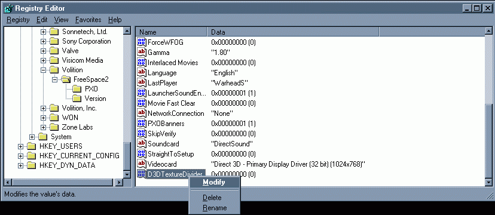
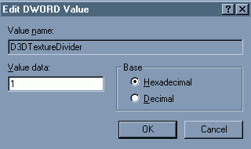

|
|
|
FreeSpace 2 Technical QuestionsI want to play FreeSpace 2 in another resolution but it only lets me play in 640x480. What can I do?I've heard something about registry hacks which can make the game look better. What do I do to install them? When I play FreeSpace 2 I get fuzzy or odd looking text. How can I fix it? The stars disappear when I'm turning but reappear when I'm still. What's going on? How can I make my joystick's throttle work? The afterburner/energy transfer system has stopped working. I hear the sound but don't go any faster. What can I do? I'm trying to install FS2 and I get a "system file is not suitable for running MS-DOS and Microsoft Windows applications" error. What can I do? I'm playing a mission but instead of the ship I'm expecting I just get a Ulysses fighter. FreeSpace 2 keeps crashing when I run a mission. What can I do? How do I change the language settings for FS2 - The retail launcher won't let me?
I'm going to start with a gratuitous FS2_Open plug. For those unaware of the Source Code Projects work. FS2_Open is an open source engine designed to run FreeSpace and greatly improve the graphics and gameplay. FS2_Open fixes a large number of problems and annoyances with the original game and comes highly recommended. In my opinion you should only be using retail still if FS2_Open refuses to work properly for you. You can find more details on FS2_Open here. If for some reason you're still using FS2 Retail and having problems with it read on. I want to play FreeSpace 2 in another resolution but it only lets me play in 640x480. What can I do?FreeSpace 2 gives you two possible resolutions 640x480 and 1024x768. If you can't select the bigger one it's probably cause when you installed FS2 you didn't install the Hi-Res graphics. The only way to enable the Hi-Res graphics is to reinstall the game. You can back up your pilot files so that you don't have to start again. Copy your Freespace2\data\players directory and then uninstall. Reinstall and this time do a full install. You can then copy your pilot files back. While you're trying to make FS2 look better you might want to look at the next question.I've heard something about registry hacks which can make the game look better. What do I do to install them?Back when FS1 & FS2 were written most graphics
cards could only deal with 256x256 pixel maps. The registry hacks
allowed cards that support larger textures to use 512x512 maps or even
larger ones. Bigger maps means better looking ships. Editing the
registry is safe as long as you're careful. Screw it up though and you
could end up with all kinds of problems in windows (not just in
FreeSpace). You should only touch the keys this guide tells you to. 1) Go to: 2) Type in "Regedit", and click OK 3) Go to the following folder: 4) Backup your Registry, just to be sure. Do this by
clicking: 5) Select: 6) Rename the newly created value to "D3DTextureDivider" 7) Right-click on "D3DTextureDivider" and select "Modify" 8) In the window that comes up, set "Value Data" to "1" then click on Ok 9) Repeat steps 5 to 8 but this time rename the DWord to D3DUseLargeTextures. The FS2_Open launcher can also be used to add the hack without needed to mess about with the registry simply by ticking the "Use large textures" option in the Video tab. OK. Installed the hacks? Seen any change? The ships should look clearer with FS1 but you probably won't see much of a difference with FS2. This is because FS1 came with a set of Hi Res maps that improve in quality when you apply the hacks. Since FS2 doesn't have those maps the only way to improve the quality of the FS2 ships is replace the maps FS2 comes with. There are two ways to get hold of these. You can download them with the FS1 port or you can extract them from FS1 yourself. To do that you must get hold of VPView (You can find instructions on that here), open the Freespace.vp file and extract everything in the maps folder to Freespace2\Data\Maps\ When I play FreeSpace 2 I get fuzzy or odd looking text. How can I fix it?Basically you're suffering from a problem with the antialiasing. The solution involves editing the registry so you might as well install the registry hacks while you're playing about with the registry. First carry out the procedure above to install the hacks. Then repeat steps 5-8 again this time for a DWord called D3DTextureOrigin. The FS2_Open launcher can also be used to add this hack too by ticking the "Fix font distortion problems" option in the Video tab. The stars disappear when I'm turning but reappear when I'm still. What's going on?This is another antialiasing problem. As with the previous two problems the solution lies in editing the registry. This time you want to follow the same procedure for a DWord called D3DLineOffset. The afterburner/energy transfer system has stopped working. I hear the sound but don't go any faster. What can I do? This had many people perplexed for a while but turned
out to be due to a bug in the FS2 code. All the cases I've seen of it
so far have occurred on Windows XP or Windows 2000. The problem can be
solved for XP users by running FS2 in compatibility mode. Open up your
FreeSpace folder and look for FS2.exe. Make a short cut for this file
and position it wherever you like (Desktop or Start menu). Right click
on icon and choose properties. Click on the Compatibility tab and
choose which ever mode you like (I've heard that Windows 95 works best
but you might find otherwise). Use the icon to run FS2 from now on. I'm trying to install FS2 and I get a "system file is not suitable for running MS-DOS and Microsoft Windows applications" error. What can I do?This is actually a windows problem that affects some older games. Most people have solved it by simply copying the autoexec.nt file from C:\WINDOWS\repair to C:\WINDOWS\system32. If that doesn't work you can find the MS Knowledge Base article on the problem here I'm playing a mission but instead of the ship I'm expecting I just get a Ulysses fighter.This is the result of installing a mod that alters the
ships table. Although it can occur for any missing ship it is most
noticeable when the affected ship is supposed to be a giant capship.
The game goes to the ships table expecting to find a certain type of
ship but can't find it cause the mod has replaced or removed that ship
from the ships.tbl. When FS2 can't find a ship on the table it replaces
it with the first ship on the table which in most cases is a Ulysses. The Official .vp files have the following names
That will solve your problem but it won't stop it from reoccurring next time you install a mod. It also means that the mod that caused the problem will stop working properly. The problem is that you didn't install the mod correctly in the first place. FreeSpace 2 keeps crashing when I run a mission. What can I do?There are lots of reasons why FS2 can crash. If you are using any mods try moving any files in the FreeSpace\data\tables directory elsewhere (or delete them). Doing that tends to cure most crashes. Failing that try removing all files (except the directories themselves) from the \data directory. Then try following the procedure above for removing extra .vp files. If all that fails the only answer I can give is to try re-installing the game or asking on one of the FreeSpace boards.
How do I
change the language settings for FS2 - The retail launcher won't let me?
|